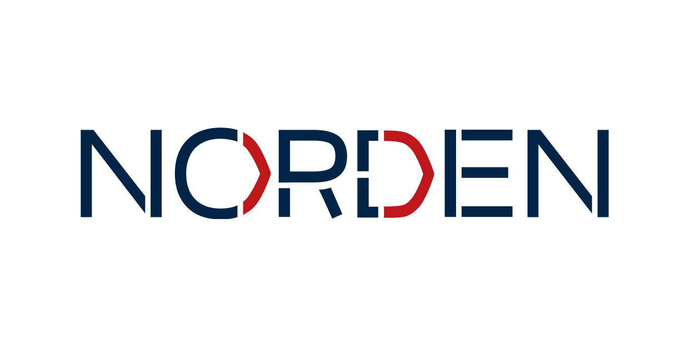

Case study · Front-End · 2017
O desafio não era só programar. Era colaborar.
Um projeto que segue no ar até hoje e que reforçou a importância de aproximar design e desenvolvimento desde o começo.
Um projeto simples na técnica, importante no processo.
Recentemente descobri que esse projeto ainda está no ar, e fiquei genuinamente feliz com isso. Não foi o projeto com mais desafios técnicos da minha trajetória, mas foi um dos que mais me ensinou sobre processo.
O maior desafio foi o tempo e a necessidade de transformar um layout em uma experiência funcional. A melhor solução apareceu quando quem desenhava e quem desenvolvia conseguiu discutir junto as possibilidades.
Em 2017, os arquivos ainda chegavam principalmente em Photoshop. A tradução entre layout, comportamento e código exigia muita conversa e atenção aos detalhes.

Sentar ao lado de quem desenha também é uma ferramenta.
Desde esse projeto, passei a fazer questão de participar mais cedo das conversas de layout, contribuindo com possibilidades técnicas e entendendo melhor as intenções por trás de cada decisão visual.
O aprendizado ficou: entender a solução junto com quem desenha vale tanto quanto qualquer entrega técnica.
“A colaboração entre design e código também faz parte do resultado.”